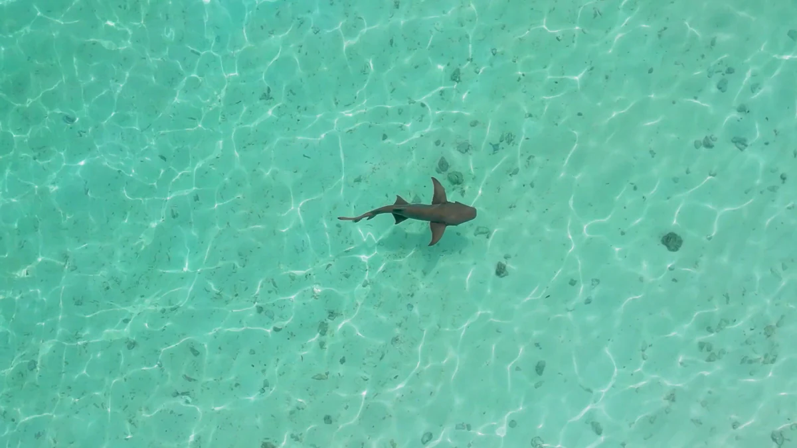

Экскурсия
Три точки снорклинга, песчаная коса и Гулхи до захода солнца.
На юг на целый день. Рифовые акулы у Эмбуду, коралловый сад у Taj, коса в полдень и Гулхи во второй половине дня перед возвращением.
9часовДлительность
12Гости
09:00Отход
18:00Возвращение
День
Как проходит день
Время ориентировочное. Окончательный маршрут капитан назначает утром — по приливу, ветру и свету.
- 09:00Причал Хулхумале
На юг через атолл.
- 10:00Шарк-Пойнт, Эмбуду
Снорклинг рядом с рифовыми акулами у деревенского рифа.
- 11:15Коралловый сад
Риф у Taj — кораллы и тропические рыбы на мелководье.
- 12:15Песчаная коса
Белый песок и прозрачная лагуна. Купание и фотографии.
- 13:00Гулхи
Высадка на местный остров.
- 13:30Обед
Обед и время посидеть.
- 14:30Жизнь кораллов
Ещё одна остановка на снорклинг по дороге на север.
- 16:30Закатный ход
К Хулхумале, со светом за спиной.
- 18:00Причал Хулхумале
У причала.
Тарифы
Что входит в тариф
Полный день
USD 1 350
За всё судно, компания из семи человек. Любое другое число считаем по запросу.
- Длительность
- 9 часов
- Отход
- 09:00 · Хулхумале
- Гости
- До 12
Включено
- Морская экскурсия на целый день
- Три точки снорклинга
- Снорклинг на Шарк-Пойнт
- Снорклинг в коралловом саду
- Остановка на косе
- Высадка на Гулхи
- Обед
- Закатный ход
Не включено
- Алкоголь, если в программе не указано иное
- Снаряжение для дайвинга на недайвинговых чартерах
- Дополнительные услуги со страницы экскурсий
- Чаевые

Ещё в море